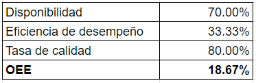

En este módulo se realizan una serie de simulaciones y parametrizaciones del proceso de producción actual de una planta con el fin de identificar puntos críticos en los cuales se puedan implementar elementos de automatización en aras de aumentar la productividad y eficiencia del proceso productivo.
Proceso actual
Condiciones
Las simulación tuvo lugar para un periodo de trabajo neto de ocho horas, los procesos de transporte de elementos entre estaciones se realizan de manera manual, se establecen bodegas (buffers) luego de cada estación con el fin de mitigar los efectos de la diferencia de tiempos entre estaciones contiguas y se asume que el suministro de materias primas tiene lugar de forma continua con suficiente stock de esta para cada turno.
Para la obtención de los tiempos característicos de cada estación se realizó un proceso de investigación llevando a cabo aproximaciones rigurosas con el fin de extrapolar valores de procesos independientes.
Una vez se establecieron las estaciones requeridas y se ingresaron los tiempos de cada uno de los procesos llevados a cabos en estas se corrió la simulación en Plant Simulation obteniendo los siguientes resultados.
En donde destaca que el proceso de Soldadura de los marcos representa un “cuello de botella” considerable, esto se puede ver ya que se encuentra trabajando ininterrumpidamente durante todo el turno, esto se debe a que demanda demasiado tiempo (comparado con las estaciones aledañas) para cumplir su labor y genera un estancamiento en los procesos que le preceden por saturación y en los que le proceden por ausencia de los elementos generados en esta estación.
De esta manera se observa en las estaciones de ensamblaje altos periodos de espera precisamente provocados por lo mencionado anteriormente, así como largos períodos de bloqueo en las que alimentan la estación de soldadura y las que funcionan de forma paralela al proceso de producción de marcos.
A partir de estos tiempos de proceso establecidos y de las interacciones se calculan los siguientes KPIs en donde se puede observar que la suma de la producción de los dos tipos de sillas llega a 20 unidades por jornada y el OEE resulta bastante bajo.
El tiempo tack fue calculado a partir de información publicada por la empresa Busscar de Colombia S.A.S en donde se extrajo que el 70% de la demanda anual en colombia era de 7290 sillas, a partir de esto se estableció como meta cubrir el 140% del total de la demanda nacional de esta compañía.
A partir de estos datos se realiza el cálculo del OEE (Overall Equipment Effectiveness).
Basado en esto se establecen los objetivos de mejora dentro del proceso actual, el proceso de automatización se enfoca en la mejora y agilización del proceso de soldadura de los marcos, para este efecto se establece el uso de celdas en las cuales los operarios se encargan de ubicar las piezas dentro de una matriz para que posteriormente un manipulador robótico realice el proceso de soldadura. El marco se subdivide en tres elementos los cuales son: patas, respaldo y asiento, para los cuales se establecen tres celdas de soldadura, finalmente una celda extra será la encargada de soldar las tres subestructuras.
Proceso mejorado
Para la mejora del proceso se estableció el uso de cuatro estaciones de soldadura, como se mencionó anteriormente.
Además de esto se determinó el uso de pintura anticorrosiva para lo cual se introdujo una estación justo después del proceso de soldadura de los marcos metálicos.
Gracias a esto, y aunque la estación de soldadura de sub estructuras del chasis sigue siendo un generador de cuello de botella, los procesos aledaños vieron aumentado el tiempo global en que se mantienen trabajando.
Esta mejoría en los procesos se puede observar principalmente en la cantidad de producto producido por jornada, llegando en este caso a un global de 60 alcanzando el objetivo. También se observa una mejoría en la tasa de calidad debido a que los procesos de soldadura llevados a cabo por robots resultan más confiables.

Finalmente se obtiene un OEE que a pesar de no ser extremadamente grande, sí representa una mejora respecto al original, lo cual aunado con el hecho de que se cumple a cabalidad la producción deseada establecida a través del tiempo tack, tenemos resultados que nos permiten concluir que el proceso de mejora cumplio los objetivos y se puede proceder a la implementación.